PMR: Fast Application Response via Parallel Memory Reclaim on Mobile Devices
USENIX ATC ’25
gpu
attention
memory
systems
training
PMR: Fast Application Response via Parallel Memory Reclaim on Mobile Devices
Background & Motivation
Growing App Demands vs. Limited Hardware
- Mobile applications exhibit increasingly high memory demands (gigabytes required for social, video, browser apps).
- Flagship devices still have limited physical DRAM (e.g., 8 GB to 16 GB).
- Android employs two main mechanisms to manage memory pressure:
- Kernel-level Reclaim: Memory swapping and direct reclaim (preferred, transparent).
- Low Memory Killer Daemon (LMKD): Kills processes (disruptive, causes long restart latencies).
Growing App Demands vs. Limited Hardware

Frequent and Expensive Process Killing
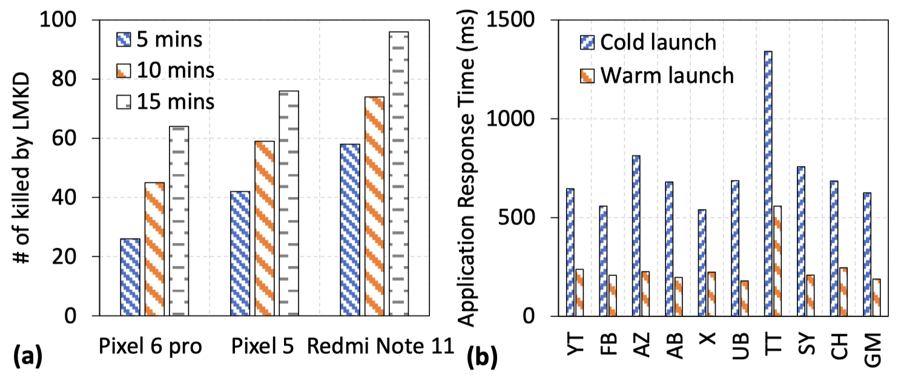
- High-end devices still experience dozens of LMKD process killings within minutes.
- Cold launches (restarts) after an LMKD kill are up to 3.1x slower than warm starts.
Slow Kernel Reclaim
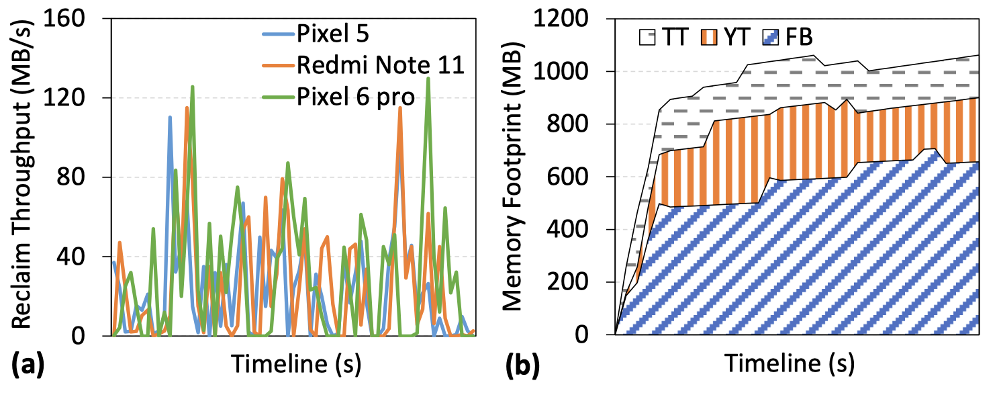
- Kernel reclaim throughput stubbornly fluctuates below 80 MB/s.
- Advanced flash storage hardware (UFS 3.1) provides minimal improvement over older hardware (UFS 2.1) for reclaim operations.
- App memory footprints rapidly outpace reclaim speed.
Hardware is Not the Bottleneck
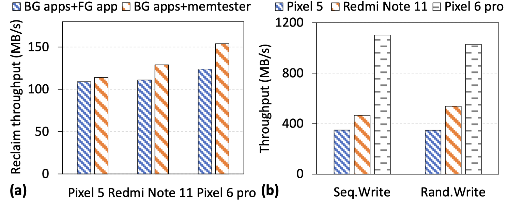
- I/O Conflicts: Background and foreground reading conflicts have a surprisingly low impact (< 8.3%) on reclaim throughput.
- Storage Bandwidth: UFS 3.1 can achieve ~1000 MB/s, proving the hardware is massively under-utilized by the memory reclaim process.
Bottleneck 1: Sequential Execution
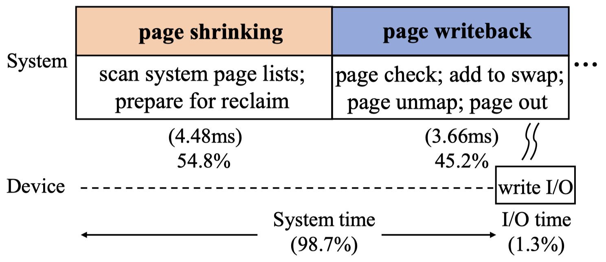
- Reclaim path is fundamentally sequential: Page Shrinking \(\rightarrow\) Page Writeback.
- Over 50% of memory reclaim time is wasted waiting on Page Shrinking (which involves no I/O).
Bottleneck 2: Inefficient Page Shrinking
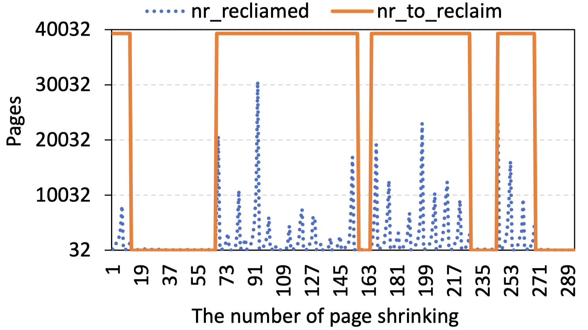
- The default kernel scanner frequently rejects pages (e.g., recently referenced, locked).
- The scan process constantly aborts early without hitting the target reclaim amount, requiring repeated, inefficient invocations.
Bottleneck 3: Internally Blocked Page Writeback
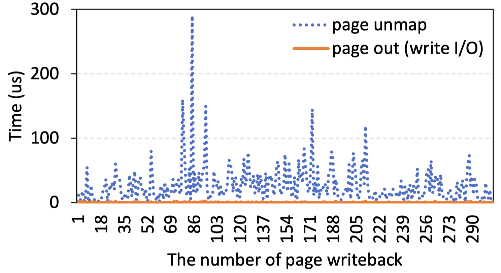
- Page-by-page unmapping: Unmapping pages from the page table is slow and unstable.
- Fragmented 4KB writes: Writing pages individually (4 KB at a time) fails to unleash the internal parallelism of modern flash storage.
System Design
PMR Architecture Overview
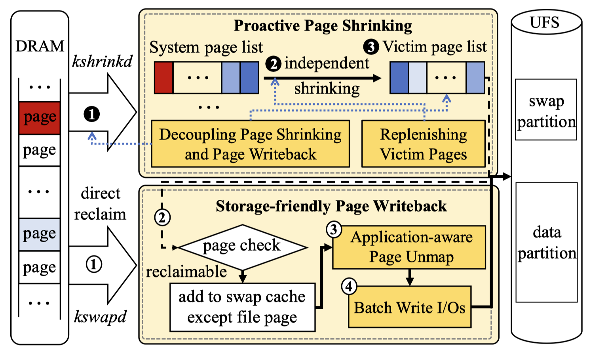
- PMR (Parallel Memory Reclaim) redesigns the reclaim path into two decoupled components:
- Proactive Page Shrinking (PPS)
- Storage-friendly Page Writeback (SPW)
Proactive Page Shrinking (PPS)
- Independent
kshrinkdthread: Offloads page shrinking from the critical writeback path. - Proactive Preparation: Triggers proactively before memory runs out to build up a “victim page list.”
- Instant Execution: When memory bursts occur, writeback processes directly consume pre-isolated pages without waiting for the shrinker.
- Watermark Control: Maintains an empirical supply of victim pages (e.g., 462 MB) to prevent thrashing.
Storage-friendly Page Writeback (SPW)
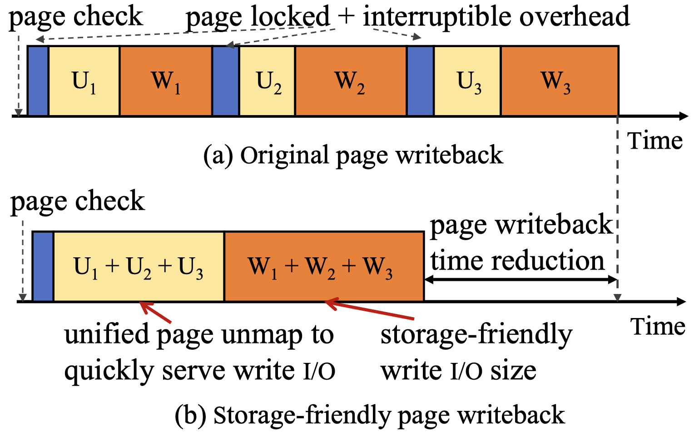
- Redesigns the 4KB page-by-page system into a bulk processing pipeline.
- Application-aware Page Unmap: Groups victim pages by application to minimize lock contention. The unmap thread is given high priority and pinned to a “big” core to avoid interrupts.
Batch Write I/Os
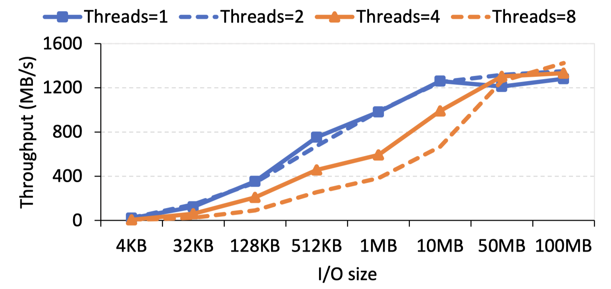
- Accumulates unmapped pages and submits them as large bulk write I/Os.
- Sized dynamically (e.g., up to 10 MB on Pixel 6 Pro) to perfectly match the internal parallelism and peak throughput of the underlying UFS storage device.
Evaluation
Environment Setup
- Platforms: Google Pixel 5 (UFS 2.1), Redmi Note 11 (UFS 2.2), Google Pixel 6 Pro (UFS 3.1).
- Workloads: UI Automator simulating user interactions across 10 foreground apps and 26 background apps.
- Baselines:
- OriginalMR (Default Linux)
- Acclaim (State-of-the-art foreground-aware memory reclaim)
- Fleet (ART GC & kernel-swap co-design)
Application Response Time
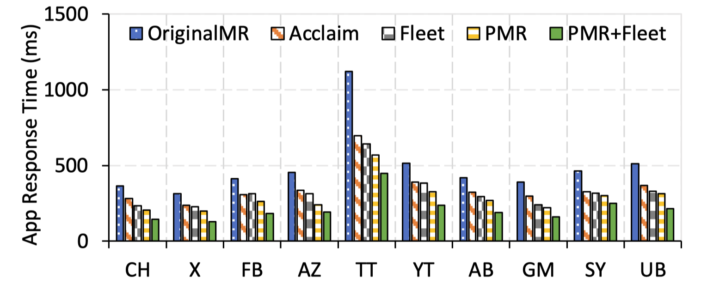
- PMR significantly reduces application response times.
- Achieves a 43.6% reduction in response latency compared to OriginalMR.
- PMR is orthogonal and complementary to previous frameworks (PMR + Fleet yields a 67.4% reduction).
Memory Reclaim Throughput
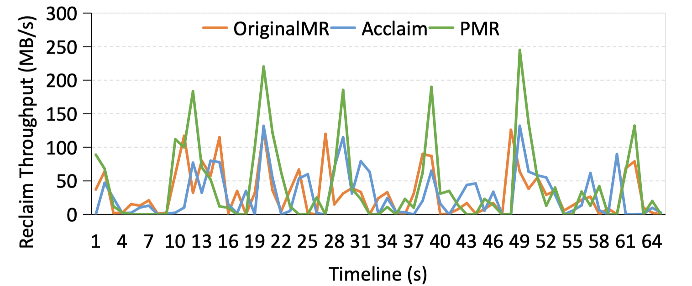
- PMR’s parallelized architecture completely removes the software bottleneck.
- Peak memory reclaim throughput is increased by 82.8% and 75.5% over OriginalMR and Acclaim, respectively.
System Stability: Reducing LMKD and Page Faults
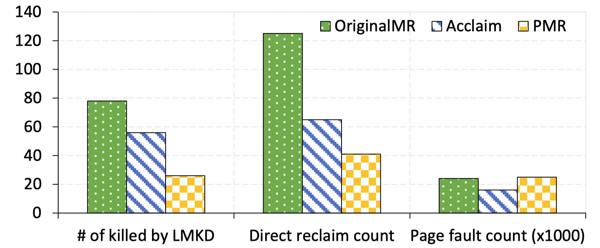
- By alleviating memory pressure quickly, PMR rescues the system from fatal memory starvation.
- LMKD events (app kills) are reduced by 82% compared to OriginalMR.
- Direct memory reclaims are reduced by 45% compared to Acclaim.
Storage Scalability
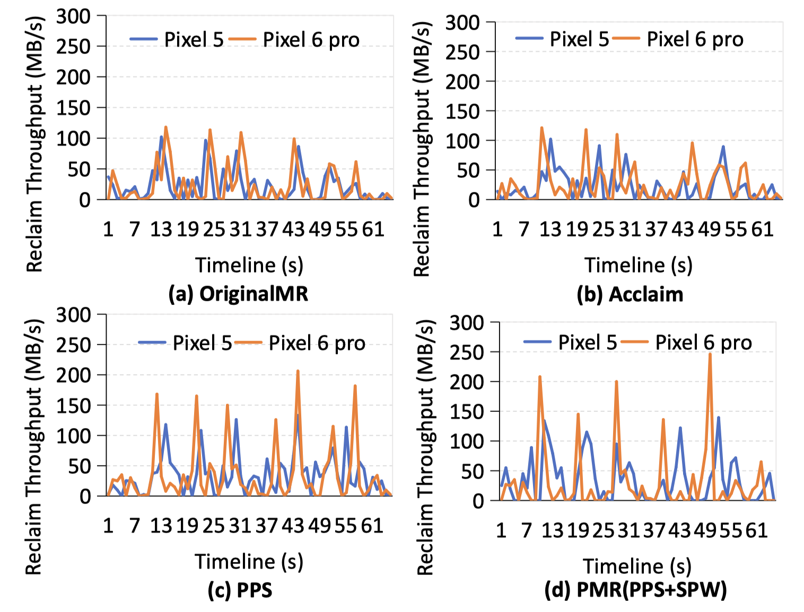
- Unlike OriginalMR which bottlenecks on CPU/software regardless of the disk, PMR scales with hardware.
- On Pixel 6 Pro (UFS 3.1), PMR pushes reclaim throughput past 200 MB/s, successfully exploiting the faster flash storage.